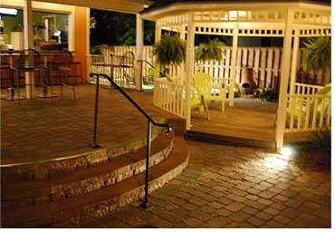
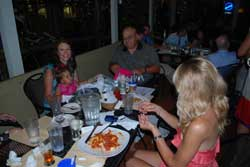
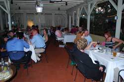
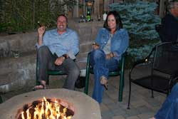

General Information
Location:
458 Philadelphia Street
Indiana, PA 15701
Dress Code: Casual
Visa, MasterCard, Discover, American Express
Yes
On Patio only
Recommended by phone: 724-465-4446
Yes, Fax – 724-465-2343
Yes
Hours
Open Monday – Saturday
Mon. – Sat. 11:30 am – 1:30 pm
Mon. – Thurs. 4:30 pm – 9:00 pm
Fri. – Sat. 4:30 pm – 10:00 pm
Private Functions
Plan your next special event at Benjamins. It is a unique place to gather with friends and family. Each of our seven dining rooms has it’s own signature decor.
The Atrium is the perfect sunroom for a bridal or baby shower, seating up to 35 people. The “Honeymoon Suite”........ so named by our staff, is a very private and intimate room with it’s cozy table for two........the perfect place to propose to your sweetheart, have a private anniversary dinner or to take a Valentine’s Day date.
Four other dining rooms seat from 16 to 20 guests. Each has a fireplace and are decorated with our “Vintage Chic” theme.
Our outdoor dining areas that can be reserved for parties or rehearsal dinners include: The Pavilion on the patio, which seats up to 40 people (enclosed in the winter with heaters) or Jamin’s patio area, which accommodates 100 people and includes its own bar, bocce court and firepit.
Whether you are hosting an after work gathering, corporate event, special birthday, rehearsal dinner, wedding or holiday celebration, Benjamin’s will make it a successful and memorable event. Please call us at 724-465-4446 for more information.
About Us
Benjamin’s opened in 1996, only as a summer restaurant. Owners, Ben and Peggy Bruns, decided in 1997 to renovate the existing Victorian house into seven private dining rooms. Thus, Benjamin’s became a year round, full service restaurant that promotes casual alfresco dining outside and a vintage chic atmosphere inside.
In 2007, a major renovation enlarged Benjamin’s kitchen, added a full service indoor/outdoor patio bar, fire pit, bocce court and a new outside dining area referred to as “Jamin’s”. In 2011, the awning area became a permanent Pavilion which was built with removable walls for summer dining. Come join us for lunch or dinner at Benjamin’s, where we always celebrate life, good health and the love of food!!